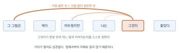
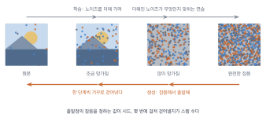

생성형 AI는 어떻게 창작하는가
이 장을 마치면
- 언어 모델이 ’다음에 올 말을 맞히는’ 방식으로 글을 쓴다는 것을 설명할 수 있다.
- 확산 모델이 노이즈에서 이미지를 만들어 내는 과정을 단계별로 설명할 수 있다.
- 말과 그림이 어떻게 하나의 공간에서 연결되는지 이해한다.
- 생성형 AI의 결과를 창의성의 관점에서 비평적으로 논할 수 있다.
- 작업에 맞는 모델을 고르는 기준을 세울 수 있다.
2장에서 기계가 배우는 방식을 보았다면, 이 장에서는 배운 것을 가지고 어떻게 새로운 것을 만들어 내는지를 본다. 언어와 이미지는 전혀 다른 매체이지만 놀랍게도 그 뒤에는 몇 가지 공통된 발상이 있다. 이 원리를 알고 나면 4장에서 배울 프롬프트 작성법이 왜 그런 형태인지가 저절로 이해된다.
3.1 다음에 올 것을 맞히기: 언어 모델
대화형 AI에게 소설의 첫 문단을 써 달라고 하면 그럴듯한 글이 돌아온다. 마치 무엇을 쓸지 궁리한 뒤 쓴 것처럼 보인다. 그러나 그 안에서 실제로 일어나는 일은 놀랄 만큼 단순하다.
하는 일은 하나뿐이다
언어 모델language model이 하는 일은 딱 하나다. 지금까지의 글 다음에 올 말로 무엇이 얼마나 그럴듯한지를 계산하는 것.
오늘 날씨가 정말까지 주어졌다고 하자. 모델은 다음에 올 후보들을 놓고 각각의 확률을 매긴다. 좋다가 47%, 덥다가 23%, 춥다가 16% 이런 식이다. 그중 하나를 골라 붙인 뒤, 늘어난 문장을 다시 입력으로 넣어 그다음 말을 계산한다. 이 과정을 문장이 끝날 때까지 반복한다.
언어 모델은 글 전체를 미리 구상하지 않는다. 한 조각씩 앞을 향해 나아갈 뿐이다. 그런데도 결과가 앞뒤 맞는 글로 보이는 것은, 앞서 쓴 것이 매번 다시 입력으로 들어가 다음 선택을 제약하기 때문이다.
낱말이 아니라 토큰
한 가지 바로잡을 것이 있다. 모델이 다루는 단위는 낱말이 아니라 토큰token이다. 토큰은 자주 쓰이는 글자 덩어리를 뜻하며, 흔한 단어는 통째로 한 토큰이 되고 드문 단어는 여러 조각으로 쪼개진다.
영어는 대략 단어 하나가 한 토큰이지만, 한국어는 사정이 나쁘다. 학습 데이터에 영어가 훨씬 많았던 탓에 한국어는 잘게 쪼개지는 경우가 많아, 같은 내용을 담는 데 토큰이 두세 배 더 든다. 유료 서비스가 토큰 단위로 요금을 매긴다면 한국어로 쓰는 쪽이 더 비싸다는 뜻이고, 한 번에 다룰 수 있는 글의 길이도 그만큼 짧아진다는 뜻이다.
모델이 한 번에 볼 수 있는 토큰 수에는 한계가 있다. 이를 문맥 창context window이라고 한다. 대화가 길어져 이 한계를 넘으면 앞부분이 시야에서 밀려나고, 그때부터 모델은 초반에 정한 설정을 잊은 것처럼 굴기 시작한다. 8장에서 긴 이야기를 쓸 때 설정 문서를 따로 만들어 주기적으로 다시 넣어 주라고 하는 이유가 이것이다.
온도: 무난함과 엉뚱함 사이의 손잡이
확률이 계산되었다면 그중 무엇을 고를까. 항상 1등만 고르면 어떻게 될까. 답은 매번 똑같고 아주 뻔한 글이 나온다이다. 그래서 실제로는 확률에 따라 무작위로 뽑는다. 1등이 뽑힐 가능성이 가장 크지만 2등, 3등도 이따금 뽑힌다.
이 뽑기의 성격을 조절하는 값이 온도temperature다. 온도를 낮추면 1등이 확률을 독식해 안전하고 예측 가능한 글이 나오고, 온도를 높이면 후보들의 확률이 고르게 퍼져 예상 밖의 선택이 늘어난다.
| 낮은 온도 | 높은 온도 | |
|---|---|---|
| 분포 | 1등이 거의 독식 | 후보들이 고르게 나뉨 |
| 결과 | 안전하고 반복적 | 신선하지만 불안정 |
| 어울리는 일 | 요약, 번역, 자료 정리, 코드 | 아이디어 확장, 시, 브레인스토밍 |
| 위험 | 뻔하고 밋밋함 | 문맥에서 벗어나거나 앞뒤가 안 맞음 |
표 3.1에 정리했다. 도구에 따라 이 값을 직접 조절할 수 있기도 하고, 창의성이나 다양성 같은 이름의 손잡이로 감싸 두기도 한다. 이름이 무엇이든 조절하는 것은 이 분포다.
창작 작업에서 결과가 밋밋하다면 온도를 의심해 볼 만하다. 다만 온도를 올린다고 좋은 글이 나오는 것은 아니다. 온도가 하는 일은 덜 그럴듯한 선택지에 기회를 주는 것뿐이며, 그중 쓸 만한 것을 골라내는 일은 여전히 사람의 몫이다.
어텐션: 멀리 있는 말끼리 이어 주기
2.4절에서 언급한 트랜스포머Transformer의 핵심 장치가 어텐션attention이다. 이름 그대로 어디에 주의를 기울일지를 정하는 장치다.
다음 문장을 보자. 미술관에서 본 그 그림은 색이 어두웠지만, 나는 그것이 마음에 들었다. 여기서 그것은 그림을 가리킨다. 사람은 자연스럽게 안다. 어텐션은 이 연결을 기계가 만들도록 해 준다. 문장 안의 모든 낱말 쌍에 대해 이 둘이 서로 얼마나 관계 있는가를 계산하고, 관계가 깊은 쌍끼리 정보를 주고받게 하는 것이다.
이전 방식들은 문장을 앞에서부터 차례로 읽어 나갔기 때문에 멀리 떨어진 말을 연결하기 어려웠다. 어텐션은 거리에 상관없이 한 번에 연결한다. 이 차이가 긴 글에서 앞뒤가 맞는 문장을 쓰게 만들었고, 나아가 이미지·음악·영상에도 같은 구조가 쓰이게 했다.
환각은 왜 생기는가
이제 1.2절에서 예고했던 환각hallucination을 제대로 설명할 수 있다.
언어 모델이 학습한 것은 무엇이 사실인가가 아니라 무엇이 그럴듯한가다. 모델 안에 사실을 적어 둔 표 같은 것은 없다. 다만 이런 문맥에서는 이런 말이 이어지더라는 경향이 가중치에 녹아 있을 뿐이다.
그래서 존재하지 않는 논문 제목을 물어보면 모델은 모른다고 하지 않고 논문 제목처럼 생긴 문자열을 만들어 낸다. 그럴듯한 저자 이름, 그럴듯한 학술지, 그럴듯한 연도까지 붙여서. 거짓말을 하는 것이 아니다. 애초에 참과 거짓을 구분하는 기능이 없고, 그럴듯함만을 좇도록 만들어졌기 때문이다.
환각은 고쳐질 결함이라기보다 이 방식의 구조적 성질에 가깝다. 자료를 붙여 주거나 검색을 붙이면 크게 줄일 수 있지만(12장), 완전히 없앨 수는 없다고 보는 편이 안전하다. 실무 원칙은 하나다. 확인할 수 없는 사실 진술은 그대로 쓰지 않는다. 인명·연도·수치·인용문·법 조항이 나오면 반드시 원 출처를 직접 확인한다.
거꾸로 말하면, 사실 여부를 따지지 않는 작업에서는 환각이 문제가 되지 않는다. 소설의 배경 도시 이름을 지어내는 일, 있지도 않은 브랜드의 광고 문구를 쓰는 일에서는 오히려 그 능력이 쓸모다. 1.3절에서 매체별로 잘되는 일과 어려운 일을 구분했듯, 여기서도 사실을 다루는 작업과 만들어 내는 작업을 나누어 생각하면 된다.
3.2 노이즈에서 그림으로: 확산 모델
이미지는 글과 사정이 다르다. 글은 앞에서 뒤로 한 줄로 이어지지만 그림에는 순서가 없다. 그래서 이미지 생성에는 전혀 다른 발상이 쓰인다. 지금 주류인 방식을 확산 모델diffusion model이라고 한다.
망가뜨리는 법을 배워 되살린다
발상은 이렇다. 그림을 만드는 법을 직접 배우기는 너무 어렵다. 그런데 그림을 망가뜨리는 일은 쉽다. 사진에 노이즈를 조금 뿌리면 조금 지저분해지고, 계속 뿌리면 결국 아무 형체도 없는 잡음이 된다.
여기서 뒤집는다. 망가뜨리는 과정을 잘게 나누어 놓고, 각 단계에서 바로 직전 상태로 되돌리는 법만 배우게 하는 것이다. 한 단계 되돌리기는 통째로 그리기보다 훨씬 쉬운 문제다. 그리고 그 되돌리기를 수십 번 이어 붙이면, 순수한 잡음에서 시작해 온전한 그림에 도달한다.

그림 3.1의 위쪽이 학습할 때의 방향이고 아래쪽이 그림을 만들 때의 방향이다. 학습에서는 원본에 노이즈를 더해 가며 이만큼 더해진 노이즈가 무엇이었는지 맞히는 연습을 한다. 생성에서는 아무 의미 없는 잡음에서 출발해 그 연습한 것을 거꾸로 적용한다.
미켈란젤로가 남겼다고 전해지는 말이 있다. 조각이란 돌 안에 이미 들어 있는 형상을 꺼내는 일이다. 확산 모델이 하는 일이 꼭 그렇다. 시작점인 잡음 안에 이미 결과가 정해져 있고, 모델은 그 주위의 불필요한 것을 걷어내며 형상을 드러낸다. 같은 잡음에서 시작하면 늘 같은 그림이 나오는 것도 이 때문이다.
도구의 설정값이 무엇을 뜻하는지
이 원리를 알면 이미지 생성 도구의 설정 화면이 갑자기 읽히기 시작한다. 6장에서 본격적으로 쓸 값들을 여기서 미리 연결해 두자.
시드 시드seed는 출발점이 되는 잡음을 결정하는 숫자다. 같은 시드에 같은 프롬프트, 같은 설정을 주면 같은 그림이 나온다. 1장 실습에서 같은 프롬프트인데 매번 다른 그림이 나온다고 했던 것은, 도구가 매번 새 시드를 뽑았기 때문이다. 마음에 드는 결과가 나왔을 때 시드를 적어 두면 그 그림을 다시 불러오거나, 시드는 고정한 채 프롬프트만 조금 바꿔 가며 변형을 만들 수 있다.
스텝 수 잡음을 몇 번에 걸쳐 걷어낼지 정하는 값이다. 적으면 빠르지만 덜 걷어낸 상태로 끝나 거칠고 흐릿하다. 많으면 정교해지지만 시간과 비용이 늘고, 어느 지점을 넘으면 더 좋아지지 않는다. 무료 도구에서 크레딧을 아껴야 할 때 가장 먼저 손대는 값이기도 하다.
가이던스 스케일 걷어낼 때 프롬프트를 얼마나 강하게 따를지를 정한다. 낮으면 모델이 자유롭게 그려 보기 좋은 그림이 나오기 쉽지만 지시를 무시하고, 높이면 지시에 충실해지지만 결과가 부자연스럽고 색이 타 버린 것처럼 되기 쉽다. 프롬프트를 자꾸 무시한다는 불평의 상당수는 이 값으로 해결된다.
세 값은 각각 어디서 출발할지(시드), 몇 번에 걸쳐 갈지(스텝), 얼마나 말을 들을지(가이던스)를 정한다. 도구마다 이름과 범위는 다르지만 역할은 같다.
잠재 공간: 작게 줄여 놓고 작업하기
한 가지 더 알아 둘 것이 있다. 지금의 이미지 생성 도구는 실제 픽셀 위에서 잡음을 걷어내지 않는다. 그렇게 하면 계산량이 감당이 안 되기 때문이다.
대신 이미지를 훨씬 작은 압축된 표현으로 바꾼 뒤 그 위에서 작업하고, 다 되면 다시 이미지로 펼친다. 이 압축된 세계를 잠재 공간latent space이라고 한다. 사진의 세부 픽셀 값 대신 무엇이 어디에 어떤 느낌으로 있는가만 남긴 요약본이라고 생각하면 된다.
잠재 공간에서 작업한다는 사실은 창작에 직접 쓸모가 있다. 이 공간에서는 두 이미지 사이의 중간을 계산할 수 있기 때문이다. 픽셀을 반씩 섞으면 그냥 두 그림이 겹쳐 비치지만, 잠재 공간에서 중간을 잡으면 두 개념의 중간에 해당하는 새 이미지가 나온다. 6장의 스타일 혼합, 7장의 이미지 참조가 모두 이 성질 위에서 작동한다.
이전 세대의 방식들
확산 모델이 처음부터 주류였던 것은 아니다. 배경 지식으로 두 가지만 짧게 짚어 둔다.
생성적 적대 신경망generative adversarial network, GAN은 2014년에 등장해 오랫동안 이미지 생성을 이끌었다. 그림을 만드는 쪽과 진짜인지 가려내는 쪽을 서로 경쟁시키는 방식으로, 위조지폐범과 감별사가 서로를 밀어 올리는 구도에 비유된다. 선명한 이미지를 빠르게 만들지만 학습이 불안정하고, 만들 수 있는 것의 다양성이 좁아지는 문제가 있었다.
변분 오토인코더variational autoencoder, VAE는 이미지를 압축했다가 펼치는 구조로, 안정적이지만 결과가 흐릿한 편이었다. 다만 앞서 말한 잠재 공간을 만드는 부품으로 지금도 확산 모델 안에 들어가 있다.
확산 모델이 이 둘을 밀어낸 이유는 안정적으로 학습되면서 다양한 결과를 낸다는 점, 그리고 무엇보다 생성 과정 중간에 사람이 개입할 자리가 많다는 점이다. 7장에서 배울 인페인팅과 구조 지정 같은 제어 기법은 여러 단계에 걸쳐 조금씩 진행되는 확산 모델의 성격 덕분에 가능해졌다.
3.3 말과 그림을 잇는 다리
아직 설명하지 않은 것이 남았다. 확산 모델은 잡음을 걷어낸다고 했는데, 어느 방향으로 걷어낼지는 무엇이 정하는가. 우리가 비 오는 오후의 책상이라고 썼을 때 그 문장이 어떻게 픽셀에 영향을 미치는가.
뜻이 비슷하면 가까운 자리에
핵심 발상은 글과 그림을 같은 지도 위에 놓는 것이다.
세상의 모든 개념이 놓인 거대한 지도를 상상해 보자. 이 지도에서는 뜻이 비슷한 것끼리 가까이 있다. 고양이와 새끼 고양이는 이웃이고, 고양이와 자동차는 멀리 떨어져 있다. 여기까지는 낱말의 지도다.
그런데 이 지도에 이미지도 함께 올린다. 고양이 사진은 고양이라는 낱말 근처에 놓이고, 자동차 사진은 자동차 근처에 놓인다. 사진과 그 사진에 붙은 설명 문장을 짝지어 수억 쌍 학습시키면, 짝지어진 것끼리는 가까워지고 아닌 것끼리는 멀어지도록 지도가 정리된다.

그림 3.2처럼 이 지도가 만들어지고 나면 놀라운 일이 가능해진다. 문장을 넣으면 그 문장이 놓일 좌표가 나오고, 그 좌표 근처에 있는 이미지가 무엇인지 알 수 있다. 반대도 된다. 이미지를 넣으면 그것을 설명하는 말을 찾을 수 있다.
확산 모델이 잡음을 걷어낼 때 참고하는 것이 바로 이 좌표다. 비 오는 오후의 책상이라는 문장의 좌표를 구한 뒤, 그 좌표에 가까워지는 방향으로 걷어낸다. 프롬프트란 결국 도착할 자리를 지정하는 일인 셈이다.
이것이 4장에서 프롬프트를 명령이 아니라 목적지 묘사로 이해하라고 하는 이유다. 배경을 지워 줘라는 명령형은 이 지도 위에 놓일 자리가 애매하다. 반면 흰 배경 위의 물체라는 묘사는 명확한 좌표를 갖는다.
부정문이 잘 안 통하는 이유
같은 이유로 부정문이 잘 작동하지 않는다. 강아지가 없는 공원이라고 쓰면 결과에 강아지가 나오는 일이 자주 있다.
지도 위에서 생각해 보면 당연하다. 이 문장에는 강아지와 공원이 들어 있고, 좌표는 그 두 개념 근처 어딘가에 잡힌다. 없다라는 말이 좌표를 반대편으로 보내 주지는 않는다. 지도는 뜻의 유사성으로 만들어졌지 논리를 다루도록 만들어지지 않았다.
그래서 이미지 생성에서 무언가를 빼고 싶을 때는 두 가지 방법을 쓴다. 하나는 아예 언급하지 않는 것이고, 다른 하나는 네거티브 프롬프트negative prompt라는 별도의 칸에 적는 것이다. 후자는 그 좌표에서 멀어지는 방향을 따로 계산해 반영하는 장치로, 문장 안에 부정어를 넣는 것과는 작동 방식이 다르다.
언어 모델(대화형 AI)은 사정이 조금 낫다. ––를 쓰지 마라는 지시를 어느 정도 따른다. 그러나 여기서도 부정 지시는 긍정 지시보다 약하다. 어려운 말을 쓰지 마보다 중학생이 이해할 수 있는 말로 써가 훨씬 잘 통한다. 하지 말라고 하는 대신 무엇을 하라고 말하는 습관은 두 매체 모두에 통하는 원칙이다.
두 개념 사이를 오가기
지도 위의 좌표라는 발상은 곧바로 창작 도구가 된다. 두 지점 사이의 중간 좌표를 잡을 수 있기 때문이다.
수채화의 좌표와 목판화의 좌표를 잇는 선 위에서 한 지점을 고르면, 두 기법의 성질이 섞인 결과가 나온다. 이렇게 두 지점 사이를 오가는 것을 보간interpolation이라고 하며, 도구에 따라 가중치 표기나 스타일 혼합 기능으로 제공된다.
a lighthouse on a cliff at dusk,
(watercolor illustration:0.7), (woodblock print:0.3)ch03-style-blend.png괄호 안의 숫자가 각 개념에 얼마나 가중을 줄지를 나타낸다. 표기 방식은 도구마다 다르므로 6장에서 각각을 확인하겠지만, 그 뒤에서 벌어지는 일은 모두 이 좌표 조작이다.
멀티모달: 하나의 모델이 여러 매체를
글과 그림을 같은 공간에 놓을 수 있다면, 소리와 영상도 못 할 이유가 없다. 여러 종류의 매체를 함께 다루는 것을 멀티모달multimodal이라고 한다.
최근의 도구들이 사진을 올리면 설명해 주고, 손으로 그린 스케치를 보고 완성된 그림을 만들어 주고, 영상을 보고 자막을 써 주는 것이 모두 이 덕분이다. 창작자에게 이것이 갖는 의미는 분명하다. 입력이 반드시 글일 필요가 없다.
말로 설명하기 어려운 것을 그림으로 보여 주는 편이 훨씬 빠른 경우가 많다. 원하는 구도를 종이에 대충 그려 사진으로 찍어 넣는 것, 마음에 드는 색감의 사진을 참조로 주는 것이 긴 프롬프트보다 정확할 때가 있다. 7장에서 다룰 참조 이미지 작업이 여기에 해당한다.
멀티모달은 손으로 그릴 수 있는 사람에게 특히 유리하다. 서툰 스케치라도 구도와 배치를 직접 정해서 넣으면, 프롬프트만으로는 도달하기 어려운 통제력을 얻는다. 인공지능이 그림 실력을 무의미하게 만든다는 걱정과 달리, 실제 현장에서는 그릴 줄 아는 사람이 도구를 더 정밀하게 부린다.
3.4 창의성인가 재조합인가
여기까지 작동 원리를 보았다. 이제 피할 수 없는 물음에 이르렀다. 이것을 창작이라 부를 수 있는가.
이 절에는 정답이 없다. 대신 서로 맞서는 주장들을 각각 가장 강한 형태로 제시한다. 읽고 나서 자기 입장을 정리해 보기 바란다. 5장의 윤리 토론과 학기말 발표에서 이 물음이 다시 돌아온다.
재조합일 뿐이라는 쪽
첫 번째 주장은 이렇다. 인공지능은 학습한 것을 통계적으로 섞을 뿐이며, 거기에 새로운 것은 없다.
근거는 약하지 않다. 3.1절에서 보았듯 언어 모델은 그럴듯함을 좇도록 만들어졌다. 그럴듯하다는 것은 곧 학습 데이터에 있을 법하다는 뜻이고, 이는 정의상 새로움의 반대편이다. 이미지 생성도 마찬가지다. 학습 데이터의 분포 안쪽으로 수렴하는 것이 목표인 시스템이 그 분포 바깥의 무언가를 내놓기를 기대하기는 어렵다.
실제로 인공지능이 만든 결과물에는 어떤 평균으로의 쏠림이 관찰된다. 이미지 생성 도구가 만든 그림들은 서로 다르면서도 어딘가 닮았고, 특유의 매끈함과 대칭성, 과하게 조화로운 색감을 공유한다. 글도 마찬가지여서, 문법은 흠잡을 데 없지만 어느 문장도 놀랍지 않다.
여기에 더해, 예술사에서 중요한 도약들은 대체로 기존 분포를 벗어남으로써 일어났다는 지적도 있다. 인상주의는 당대의 그럴듯함을 어겼기 때문에 인상주의였다. 그럴듯함을 최대화하도록 설계된 시스템은 원리상 그런 도약을 만들 수 없다.
인간의 창작도 재조합이라는 쪽
두 번째 주장은 이렇다. 사람의 창작도 결국은 보고 배운 것의 재조합이다. 인공지능만 다르게 취급할 이유가 없다.
이 주장도 만만치 않다. 어떤 예술가도 진공에서 나오지 않는다. 화가는 앞선 화가의 그림을 보고 배웠고, 작가는 읽은 책의 문장을 자기 것으로 삼켰다. 창작 심리학의 여러 연구는 창의적 발상이 대체로 기존 요소의 새로운 결합에서 나온다고 본다. 그렇다면 재조합이라는 말은 인공지능을 깎아내리는 근거가 되지 못한다.
또한 평균적이다라는 비판은 도구가 아니라 사용자를 향해야 한다는 반론도 있다. 아무 프롬프트나 넣으면 평균적인 결과가 나오는 것이 당연하다. 도구를 잘 다루는 사람은 분포의 가장자리를 겨냥할 수 있고, 실제로 그렇게 만든 작업물은 인공지능 특유의 인상을 주지 않는다.
우연의 값어치
세 번째로, 어느 쪽 편도 아닌 관점이 있다. 무작위성이 만드는 우연한 발견에 주목하는 시각이다.
3.1절에서 온도가 확률 분포에서 무작위로 뽑는 성질을 조절한다고 했고, 3.2절에서 시드가 출발점의 잡음을 정한다고 했다. 이 무작위성은 결함이 아니라 이 도구의 성질이며, 때때로 사람이라면 하지 않았을 조합을 내놓는다.
예술사에는 우연을 창작의 방법으로 삼은 전통이 두텁다. 초현실주의자들의 자동기술법, 존 케이지의 우연성 음악, 데이비드 보위가 썼다는 가사 오려붙이기가 그렇다. 이들은 의도의 통제를 일부러 느슨하게 해서 자기 안에 없던 것을 끌어냈다.
이 관점에서 보면 인공지능은 창작하는 주체도 아니고 단순한 붓도 아니다. 그보다는 우연을 대량으로 생산하는 장치에 가깝다. 그리고 그 우연 더미에서 무엇을 건져 올릴지 정하는 일이 사람의 몫으로 남는다. 1.4절에서 선택이 새로운 병목이 된다고 한 이야기와 정확히 이어진다.
문제는 기계가 창작을 하느냐가 아니라, 기계가 만든 것 앞에서 사람이 무엇을 하느냐이다.
자기 입장을 정리해 보기
토론에 들어가기 전에 스스로 답해 볼 질문들이다. 정답을 찾기보다 자기 생각이 어디에 걸리는지 확인하는 데 목적이 있다.
- 인공지능이 만든 그림이 공모전에서 1등을 했다면, 그 상은 누구의 것인가? 프롬프트를 쓴 사람? 도구를 만든 회사? 아무도 아닌가?
- 어떤 작품을 보고 감동했는데 나중에 인공지능이 만든 것임을 알았다면, 그 감동은 취소되어야 하는가?
- 만약 인공지능이 학습 데이터에 전혀 없던 새로운 화풍을 만들어 냈다면, 앞의 첫 번째 주장은 무너지는가?
- 당신이 인공지능을 써서 만든 작업물에 내 작품이라고 이름을 붙일 수 있으려면, 최소한 무엇을 했어야 한다고 생각하는가?
마지막 질문이 특히 실질적이다. 여기에 대한 자기 기준을 세워 두면 13장에서 포트폴리오를 정리할 때, 그리고 5장에서 저작권을 논할 때 흔들리지 않는다.
3.5 모델마다 다른 성격
같은 프롬프트를 여러 도구에 넣어 보면 결과가 확연히 다르다. 어떤 도구는 사진처럼, 어떤 도구는 일러스트처럼 그린다. 어떤 도구는 지시를 곧이곧대로 따르고, 어떤 도구는 알아서 예쁘게 만들어 준다. 이 절에서는 왜 다른지, 그래서 무엇을 골라야 하는지를 정리한다.
왜 다른가
원리가 같은데도 성격이 갈리는 데는 세 가지 이유가 있다.
학습 데이터가 다르다. 사진을 많이 본 모델은 사진풍으로, 일러스트를 많이 본 모델은 일러스트풍으로 기운다. 저작권 문제를 피하려고 라이선스를 확보한 데이터만 쓴 모델도 있는데, 이런 모델은 상업적으로 안전한 대신 표현의 폭이 좁을 수 있다.
다듬은 방향이 다르다. 2.3절에서 본 강화학습 단계에서 무엇을 좋은 결과로 평가했느냐가 성격을 만든다. 사람이 보기에 예쁜 쪽으로 강하게 다듬은 모델은 아무 프롬프트나 넣어도 그럴듯한 결과를 주지만, 그 대신 지시를 무시하고 자기 취향대로 그리는 경향이 생긴다.
안전 정책이 다르다. 어떤 표현을 막을지에 대한 기준이 서비스마다 다르다. 같은 프롬프트가 한 곳에서는 통하고 다른 곳에서는 거부된다. 특히 인물, 신체, 폭력, 실존 인물, 상표에 관련된 표현에서 차이가 크다.
생성이 거부되었다고 해서 자기 의도가 잘못된 것은 아니다. 미술사의 명화를 재해석하려는 시도가 신체 표현 때문에 막히는 일은 흔하다. 다만 우회하는 표현을 찾는 것과 금지된 것을 뚫으려 하는 것은 다르다. 전자는 창작 기술이고 후자는 이용약관 위반이며, 계정 정지로 이어질 수 있다.
두 가지 맞바꿈
도구를 고를 때 부딪히는 맞바꿈이 두 가지 있다.
첫째는 지시 충실도와 미적 완성도 사이다. 지시에 충실한 모델은 프롬프트에 적은 것을 다 반영하려 애쓴다. 대신 요소가 많아지면 결과가 어수선해진다. 미적 완성도가 높은 모델은 알아서 예쁘게 정리해 주지만, 적어 놓은 요소를 슬쩍 빼먹는다. 인물 셋이 나란히라고 썼는데 둘만 그리는 식이다.
작업 성격에 따라 선택이 갈린다. 정해진 사양을 맞춰야 하는 의뢰 작업이라면 지시 충실도가 우선이고, 분위기 시안을 여러 장 뽑는 단계라면 미적 완성도가 편하다.
둘째는 속도·비용과 품질 사이다. 이것은 6장과 11장에서 크레딧을 다룰 때 계속 마주친다. 요령은 하나다. 탐색 단계에서는 싸고 빠른 도구로 방향을 잡고, 확정된 뒤에 좋은 도구로 마무리한다. 좋은 도구로 처음부터 백 장을 뽑는 것은 가장 비싼 방식이다.
| 하려는 일 | 중요한 성질 | 덜 중요한 성질 |
|---|---|---|
| 분위기 시안 여러 장 | 속도, 미적 완성도 | 지시 충실도 |
| 정해진 사양의 삽화 | 지시 충실도, 제어 기능 | 속도 |
| 연속된 컷(웹툰 등) | 캐릭터 일관성 기능 | 한 장의 완성도 |
| 상업적 납품물 | 라이선스 안전성 | 최신 기능 |
| 학교 과제·습작 | 무료 한도 | 해상도 |
표 3.2를 도구 선택의 출발점으로 삼되, 실제 판단은 직접 비교해 보고 내리는 편이 낫다. 다음 절의 실습이 그 비교를 해 보는 과정이다.
같은 프롬프트로 비교하는 법
도구를 비교할 때는 반드시 같은 프롬프트를 쓴다. 당연해 보이지만 실제로는 잘 지켜지지 않는다. 도구마다 프롬프트를 조금씩 손보다 보면 무엇 때문에 결과가 달라졌는지 알 수 없게 된다.
비교용 프롬프트는 다음 조건을 갖추는 것이 좋다. 요소가 여러 개 있어야 지시 충실도를 볼 수 있고, 스타일이 지정되어 있어야 화풍의 기울기를 볼 수 있고, 글자가 하나쯤 있어야 약점을 볼 수 있다.
three paper boats floating on a puddle at night,
one boat has the word "HOPE" written on it,
neon signs reflected on the water,
cinematic lighting, shallow depth of field,
illustration stylech03-tool-compare.png이 프롬프트로 각 도구에서 네 장씩 만든 뒤 다음을 확인한다.
- 배가 정확히 셋인가? (지시 충실도)
- 글자
HOPE가 읽히는가? (글자 처리 능력) - 사진풍인가 일러스트풍인가? (기본 기울기)
- 네 장이 서로 얼마나 다른가? (다양성)
이 결과를 기록해 두면 앞으로 작업할 때마다 어느 도구로 갈지 고민할 일이 줄어든다. 부록 A의 비교표에 자기 관찰을 덧붙여 두기 바란다.
실습 3-1. 온도 바꿔 보기
같은 요청을 온도만 바꿔 실행하고 결과를 비교한다. 온도를 직접 조절할 수 없는 서비스라면 말로 지정해 본다.
비 오는 날의 버스 정류장을 배경으로 한 짧은 장면을 세 문장으로 써 줘.
아주 안전하고 무난하게 써 줘.비 오는 날의 버스 정류장을 배경으로 한 짧은 장면을 세 문장으로 써 줘.
예상 밖의 이미지와 낯선 조합을 적극적으로 시도해 줘.두 결과를 나란히 놓고 다음을 정리한다.
- 두 번째 결과에서 첫 번째에는 없던 쓸 만한 발상을 하나 찾아낸다.
- 두 번째 결과에서 버려야 할 부분을 하나 찾아낸다.
- 둘을 섞어 자기 문장으로 다시 쓴다.
3번이 이 실습의 핵심이다. 온도를 올린 결과를 그대로 쓰는 것이 아니라 재료로 삼는 연습이다.
실습 3-2. 환각 잡아내기
인공지능에게 자기 전공 분야의 자료를 물어보고, 그 답을 검증한다.
디지털 아트와 인공지능의 관계를 다룬 학술 논문 다섯 편을 추천해 줘.
각각 저자, 발표 연도, 학술지 이름, 핵심 주장을 정리해 줘.다섯 편 각각에 대해 제목과 저자로 실제 검색을 해 보고 다음 표를 채운다.
1. 제목: ______________________ 실제로 존재 □ 예 □ 아니오
2. 제목: ______________________ 실제로 존재 □ 예 □ 아니오
3. 제목: ______________________ 실제로 존재 □ 예 □ 아니오
4. 제목: ______________________ 실제로 존재 □ 예 □ 아니오
5. 제목: ______________________ 실제로 존재 □ 예 □ 아니오
존재하지 않은 것: ___편 / 5편
있긴 하지만 정보가 틀린 것(연도·저자 등): ___편이어서 같은 AI에게 네가 알려 준 논문 중 실제로 존재하지 않는 것이 있는지 확인해 줘라고 물어보자. 어떻게 답하는가? 스스로 잘못을 알아채는가? 그 답변 역시 믿을 수 있는가?
실습 3-3. 시드 고정하고 변주하기
시드를 지정할 수 있는 이미지 도구에서 진행한다. 지정 기능이 없다면 마음에 드는 결과의 변형 만들기 기능으로 대신한다.
- 아무 프롬프트나 넣어 이미지를 여러 장 만들고, 그중 하나를 고른다.
- 그 이미지의 시드를 기록한다.
- 시드를 고정한 채 프롬프트에서 한 낱말만 바꿔 다시 생성한다. (예:
sunset→sunrise) - 3번을 다섯 번 반복하되 매번 다른 낱말 하나만 바꾼다.
전체 결과를 나란히 놓고, 시드가 고정되었을 때 무엇이 유지되고 무엇이 바뀌는지 관찰한다. 이것이 7장에서 다룰 제어의 출발점이다.
실습 3-4. 도구 비교하기
3.5절의 표준 프롬프트를 최소 세 개 도구에 넣고, 각각 네 장씩 생성해 비교표를 만든다.
도구명: ____________________
배가 정확히 셋인 이미지 ___ / 4장
HOPE 글자가 읽히는 이미지 ___ / 4장
기본 성향 □ 사진풍 □ 일러스트풍 □ 중간
네 장의 다양성 □ 서로 많이 다름 □ 비슷함
생성 시간·크레딧 소모: ____________
한 줄 인상: ____________________세 도구의 기록을 나란히 놓고, 다음 작업에 어느 도구를 쓸지 각각 정해 본다.
- 학과 홍보 포스터의 배경 이미지
- 8컷짜리 웹툰의 인물 컷
- 발표 자료에 넣을 개념 삽화
실습 3-5. 토론 준비
3.4절의 네 가지 질문 중 하나를 골라, 자기 입장을 한 문단으로 정리한다. 반드시 다음을 포함할 것.
- 자기 주장 한 문장
- 그 근거 두 가지 (하나는 이 장에서 배운 원리에서, 하나는 자기 경험에서)
- 자기 주장에 대한 가장 강한 반론 하나와, 그에 대한 답
마지막 항목이 어렵다면 인공지능에게 도움을 받아도 좋다. 다만 반론을 만들게 하는 데만 쓰고, 그에 대한 답은 스스로 쓴다.
아래는 내 주장이야. 이 주장에서 가장 약한 부분을 지적하고,
반대편에서 제기할 수 있는 가장 강력한 반론을 하나만 제시해 줘.
동의하거나 격려하지 말고 비판만 해 줘.
[내 주장을 여기에 붙여넣기]3장 요약
- 언어 모델language model이 하는 일은 하나다. 지금까지의 글 다음에 올 말이 얼마나 그럴듯한지를 계산하고 그중 하나를 골라 붙이는 것. 글 전체를 미리 구상하지 않고 한 조각씩 앞으로 나아갈 뿐이다.
- 모델이 다루는 단위는 낱말이 아니라 토큰token이며, 한국어는 영어보다 잘게 쪼개져 같은 내용에 토큰이 더 든다. 한 번에 볼 수 있는 양인 문맥 창context window을 넘으면 앞부분이 시야에서 밀려나 초반 설정을 잊는다.
- 온도temperature는 확률 분포에서 뽑는 방식을 조절한다. 낮으면 안전하고 뻔하게, 높으면 신선하지만 불안정하게. 도구의 창의성 설정이 실제로 건드리는 값이다.
- 어텐션attention은 문장 안에서 멀리 떨어진 말끼리도 관계를 맺게 하는 장치이며, 트랜스포머Transformer의 핵심이다.
- 환각hallucination은 고칠 결함이라기보다 구조적 성질이다. 모델은 무엇이 사실인가가 아니라 무엇이 그럴듯한가를 학습했기 때문이다. 사실을 다루는 작업에서는 반드시 원 출처를 확인하고, 만들어 내는 작업에서는 오히려 그 능력이 쓸모가 된다.
- 확산 모델diffusion model은 그림에 노이즈를 더하는 과정을 배운 뒤 그것을 거꾸로 되돌려 이미지를 만든다. 잡음 안에 들어 있는 형상을 꺼내는 조각가에 비유할 수 있다.
- 도구의 설정값은 각각 이 과정의 한 부분이다. 시드seed는 어디서 출발할지, 스텝 수는 몇 번에 걸쳐 갈지, 가이던스 스케일은 프롬프트를 얼마나 따를지를 정한다.
- 계산량 때문에 실제 작업은 픽셀이 아니라 압축된 잠재 공간latent space에서 이루어진다. 이 공간에서 두 개념의 중간을 잡을 수 있다는 성질이 스타일 혼합과 이미지 참조를 가능하게 한다.
- 글과 그림은 같은 공간의 좌표로 바뀐다. 프롬프트란 결국 도착할 자리를 지정하는 일이며, 그래서 명령형보다 묘사형이 잘 통하고 부정문은 잘 통하지 않는다. 빼고 싶은 것은 언급하지 않거나 네거티브 프롬프트negative prompt에 적는다.
- 멀티모달multimodal 덕분에 입력이 반드시 글일 필요가 없다. 스케치·참조 이미지를 넣는 편이 긴 프롬프트보다 정확할 때가 많으며, 이 점에서 그릴 줄 아는 사람이 도구를 더 정밀하게 부린다.
- 이것은 창작인가에 대해 이 책은 답을 정하지 않는다. 재조합일 뿐이라는 쪽, 인간의 창작도 재조합이라는 쪽, 우연의 값어치에 주목하는 쪽을 모두 살펴보고 자기 입장을 세울 것.
- 모델의 성격이 갈리는 이유는 학습 데이터·다듬은 방향·안전 정책의 차이다. 도구를 고를 때는 지시 충실도와 미적 완성도, 속도·비용과 품질 사이의 맞바꿈을 작업 성격에 맞춰 판단한다. 탐색은 싸고 빠른 도구로, 마무리는 좋은 도구로.
3장 연습문제
- ★ 언어 모델이 문장을 만들어 내는 과정을 세 단계로 나누어 설명하시오.
- ★ 다음 중 온도temperature를 낮게 설정하는 것이 적절한 작업을 모두 고르시오.
- 회의록을 요약한다
- 시의 소재를 스무 개 뽑는다
- 계약서 조항을 쉬운 말로 옮긴다
- 캐릭터의 이름 후보를 만든다
- ★ 확산 모델에서 시드seed, 스텝 수, 가이던스 스케일이 각각 무엇을 결정하는지 한 문장씩 쓰시오.
- ★★ 이미지 생성에서 a park with no dogs라고 썼는데도 결과에 개가 나오는 이유를, 3.3절에서 배운 개념을 이용해 설명하시오. 그리고 개를 빼기 위한 방법을 두 가지 제시하시오.
- ★★ 환각hallucination이 언어 모델의 결함이 아니라 구조적 성질이라고 말하는 이유를 설명하시오. 또한 환각이 오히려 유용한 창작 상황을 하나 들어 보시오.
- ★★ 다음 두 프롬프트 중 이미지 생성 도구에서 더 잘 작동할 것으로 예상되는 쪽을 고르고, 그 이유를 3.3절의 개념으로 설명하시오.
배경을 지워 주고 인물만 남겨 줘a person standing against a plain white background
- ★★ 한국어로 프롬프트를 쓸 때 영어보다 토큰이 더 많이 소모되는 이유를 설명하고, 이것이 실무에서 어떤 불이익으로 나타나는지 두 가지 쓰시오.
- ★★★ 잠재 공간latent space이 무엇인지 설명하고, 이 공간에서 두 지점 사이의 중간을 잡을 수 있다는 성질이 창작 도구의 어떤 기능으로 나타나는지 예를 들어 서술하시오.
- ★★★ 3.4절의 세 가지 관점(재조합일 뿐이다 / 인간의 창작도 재조합이다 / 우연의 값어치) 중 자신이 가장 동의하는 쪽을 고르고, 나머지 두 관점의 가장 강한 반론에 답하는 형태로 자기 입장을 서술하시오. (600자 내외)
- ★★★ 3.5절의 표준 프롬프트를 세 개 이상의 도구에 넣어 비교한 결과를 보고하시오. 보고에는 (1) 지시 충실도, (2) 글자 처리, (3) 기본 성향, (4) 다양성의 네 항목에 대한 관찰과, (5) 자기 전공 작업에 어느 도구를 쓰겠다는 판단과 그 근거가 포함되어야 한다.